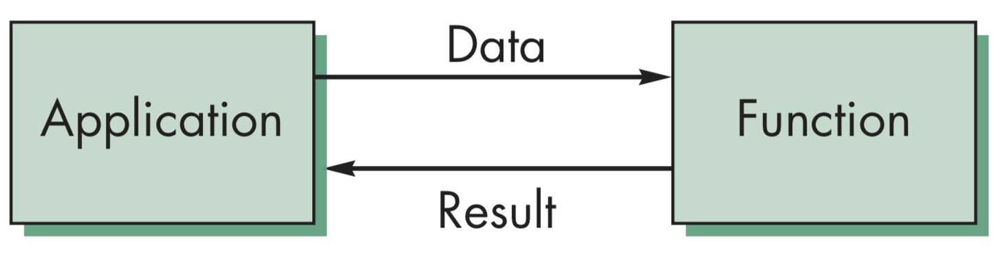
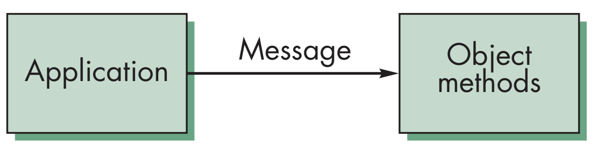

计算机图形学
第九章 建模和层次结构
图形对象和场景图
图形对象和场景图
即时图形模式的局限性(Immediate Mode Graphics)
在应用程序中定义一个几何对象，代码执行时，对象就被传送到流水线上进行处理，绘制完成后，对象就从图形系统中消失了。如果需要重绘对象，无论是改变了状态的，或是未改变的，都需要重新执行这部分代码。在传统OpenGL管线中，可以利用显示列表部分实现
图形对象和场景图
保留图形模式(Retained Mode Graphics)
在保留图形模式中，服务器端保存显示列表，GPU允许将数据保存在GPU中，基本上所有的即时模式的函数都已不再支持，不过仍然可以将原来的OpenGL看作一种更底层的函数调用
图形对象和场景图
OpenGL和对象
OpenGL还是面向对象的。比如需要定义一个绿色的球体，可以用多边形建立球体的模型，其颜色由OpenGL的状态决定，而不是作为对象的一种属性，与顶点属性之间也没有紧密的联系。这种表示不符合我们对客观对象的认识，因此可以考虑用面向对象的概念在代码中建立更好的对象描述
图形对象和场景图
两种模式的对比
以绘制旋转的立方体为例
命令式编程模式下，旋转函数需要知道立方体的表示，包括顶点列表和边列表
在面向对象模式下，物体以对象形式存储，应用程序需要传送消息给对象，对象中包含了进行变换的方法
图形对象和场景图
语言对比
用C实现，可利用结构构建对象
在C++或Java或JavaScript，可以直接构建类对象，C++可以实现更好的对象设计和接口调用，JavaScript则支持对象的多个方法定义
图形对象和场景图
立方体对象
设定需要构建一个简单的立方体对象，能够实现其缩放、平移、旋转等，并通过代码设定其颜色等
var Cube{
var color[3];
var matrix[4][4];
}
var myCube = new Cube();
myCube.color[0]=1.0;
myCube.color[1]=myCube.color[2]=0.0;
myCube.matrix[0][0]=...
设定立方体的变换和颜色
myCube.translate(1.0, 0.0, 0.0);
myCube.rotate(theta, 1.0, 0.0, 0.0);
setColor(myCube, 1.0, 0.0, 0.0);
立方体绘制方法
mycube.render();
图形对象和场景图
实现问题
实现时，可利用私有部分的任意实现，如顶点列表。私有成员可访问公有成员，类方法的实现可采用任意形式以隐藏其具体实现过程。而实现绘制方法仍然需要调用标准的OpenGL绘制函数
图形对象和场景图
其它对象
其它对象也有几何属性，如相机、光源等，同时还需要定义非几何对象，如材质、颜色、变换矩阵等
图形对象和场景图
JS Objects
cube mycube;
material plastic;
mycube.setMaterial(plastic);
camera frontView;
frontView.position(x ,y, z);
也可创建更类似Java或C++的对象，包含构造器、原型、对象方法、私有变量和方法等
图形对象和场景图
光源对象
var myLight = new Light();
// match Phong model
myLight.type = 0; //directional
myLight.position = ……;
myLight.orientation = ……;
myLight.specular = ……;
myLight.diffuse = ……;
myLight.ambient = ……;
}
图形对象和场景图
场景
再来看一下之前定义的人模型，可以看到，可以用树结构或者等价的代码描述该模型，并且可以写一个通用的遍历树方法显示模型。同理，场景中的各种因素，包括相机、光源、材质、几何对象等也可以同样的形式构建一棵树，绘制场景可以通过遍历树实现
图形对象和场景图
场景图

myScene = new Scene();
myLight = new Light();
myLight.Color = ……;
…
myscene.Add(myLight);
object1 = new Object();
object1.color = …
myscene.add(object1);
…
…
myscene.render();
图形对象和场景图
场景图历史
OpenGL的发展很大程度上依靠那些不断挑战硬件极限的人们，如实现实时图形学计算、动画和模拟计算、独立应用程序实现等。CAD社区需要共享各类数据库，但并没有实时计算或照片效果实现的需求，但要求有跨平台的支持，因此也就最早提出了图形标准PHIGS
图形对象和场景图
场景图组织

图形对象和场景图
Inventor和Java3D
Inventor和Java3D都提供了场景图API，场景图也可描述为一个文件，通过场景图API提供对场景各种变换的支持。但是，最初的实现无法和图形系统相适应，因此，现有的多种场景图API都建立在OpenGL，WebGL或DirectX等底层API之上
图形对象和场景图
VRML和OSG
- VRML，是一个能够适用于万维网络环境的场景图API，可通过链接支持分布式网络数据库，其全称为虚拟现实标记语言(Virtual Reality Markup Language, VRML)
- OSG，全称为Open Scene Graph，为一场景管理器API，支持复杂场景的构建和渲染，在第一轮渲染时可通过遮挡裁剪可支持复杂的几何形体，在第二轮裁剪时，可通过对几何形体的排序支持半透明效果，前两道渲染结果能够生成一个几何形体列表供第三道渲染使用
图形对象和场景图
Three.js
Three.js是一个构建在WebGL基础之上的场景管理器，可用于渲染场景图，在Web开发中得到广泛的应用，官方网站为http://www.threejs.org，提供了大量的示例供参考，Eric Haines在Udacity上也开设了关于Three.js的开放课程，供大家学习。与传统的计算机图形学的实现方法相比，three.js的实现有很大的不同
图形对象和场景图
three.js场景
利用three.js构建场景对象，主要代码如下：
var scene = new THREE.scene();
var camera = new THREE.PerspectiveCamera(75, window.innerWidth/window.innerHeight, 0.1, 1000);
var renderer = new THREE.WebGLRenderer();
renderer.setSize(window.innerWidth, window.innerHeight);
document.body.appendChild(renderer.domElement);
var geometry = new THREE.CubeGeometry(1, 1, 1);
var material = new THREE.MeshBasicMaterial({color:0x00FF00});
var cube = new THREE.Mesh(geometry, mateiral);
scene.add(cube);
camera.position.z = 5;
// three.js 渲染主循环
var render = function(){
requestAnimationFrame(render);
cube.rotation.x += 0.1;
cube.rotation.y += 0.1;
renderer.render(scene, camera);
};